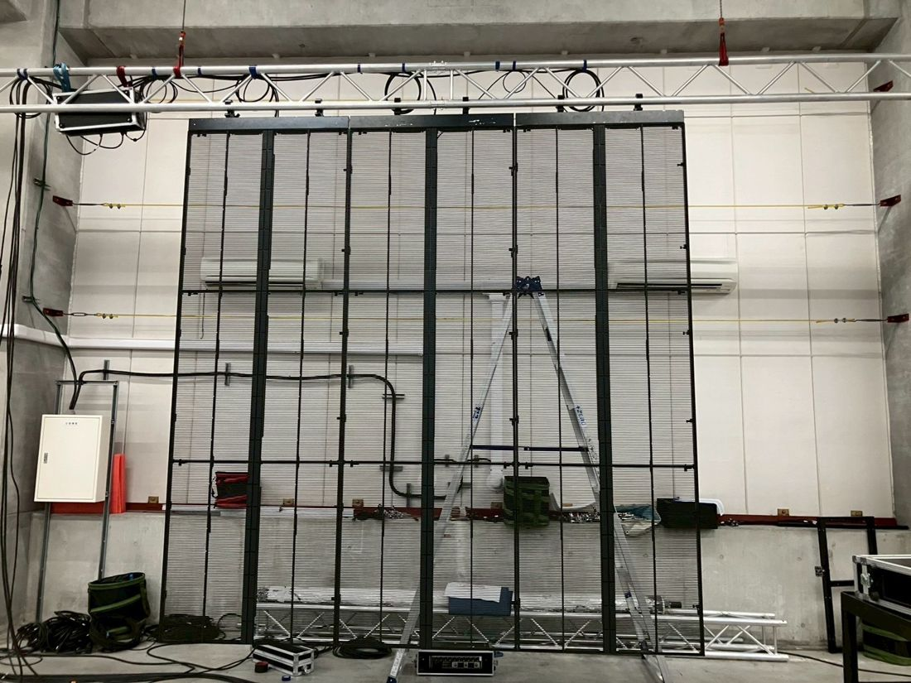
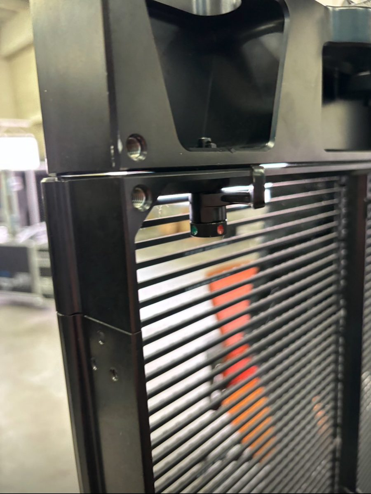
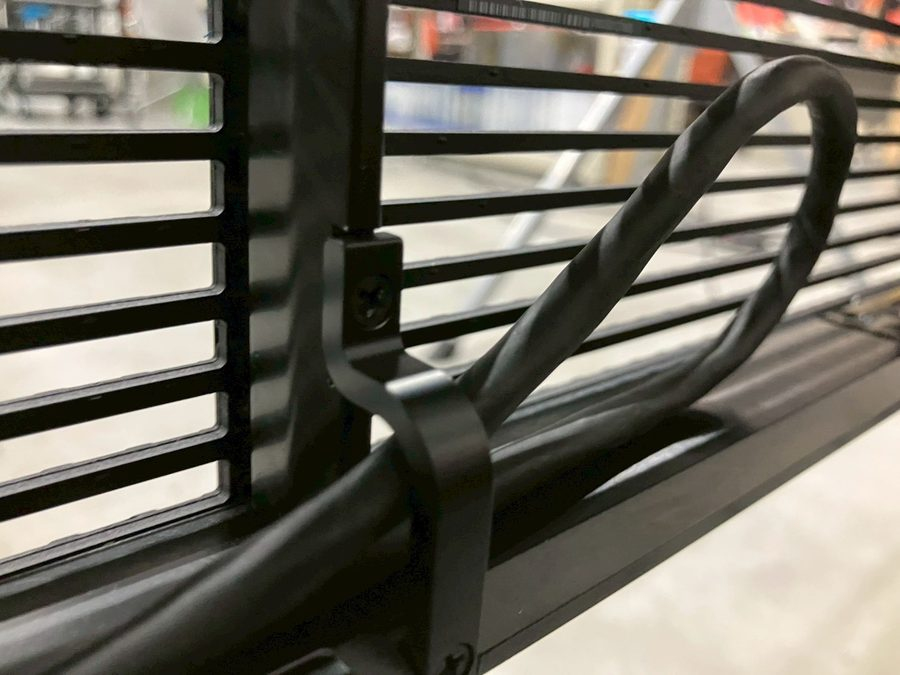

何を透かして見せる？
背後の舞台や照明と、表示する映像の関係を整理。
LED ↗EQUIPMENT / 48
屋内透過型LEDディスプレイ
背景を透かしながら、映像を重ねる。
KEY SPECIFICATIONS
 画像を大きく見る ＋
画像を大きく見る ＋IN OUR FIELD



01 / ROLE & FLOW
02 / BEFORE YOUR BRIEF
背後の舞台や照明と、表示する映像の関係を整理。
最も近い観客の位置と、文字・映像の細かさを確認。
V8Sの世代と受信・制御構成、必要な支持部材を確認。
03 / CHOOSING THE RIGHT TOOL
背景を完全に隠す画面ではなく、奥の舞台や照明も生かす屋内演出を考えたいときに。映像素材と背景の明るさを一緒に調整して見せ方を決めます。
透過の見え方は、背景と明るさで変わります。細かい文字の読みやすさは観客距離と素材次第です。V8Sは屋内用で、屋外用V8TやV8S MKIIの仕様を混ぜません。
元型式V8Sの公式仕様は1パネル112×112画素です。対応する映像処理・受信構成を確認して使います。支持方法と必要部材は、構成に合わせてそろえます。
寸法・重さ・消費電力はメーカーの公表値です（元型式 V8S の値）。吊り荷重と回路容量は、使う枚数と型式の公表値から計算して、設営前の図面に載せます。設置は、メーカーの仕様書にある吊りの方法で組みます。
見せたい背景、画面の配置、観客距離と文字サイズ、周囲と背後の照明、元型式V8Sか別世代か、制御機器・配線・支持部材・電源をお聞かせください。本体・周辺機材・搬入出・設営・本番操作・撤去を分けて、必要な範囲を整理します。
04 / RELATED EQUIPMENT
Ruby-C 2.6とは見せ方と画素ピッチが異なります。